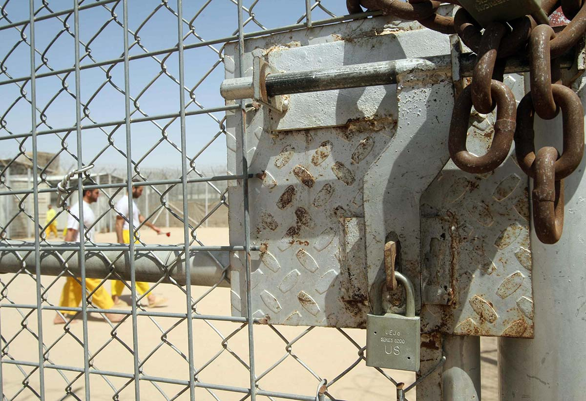
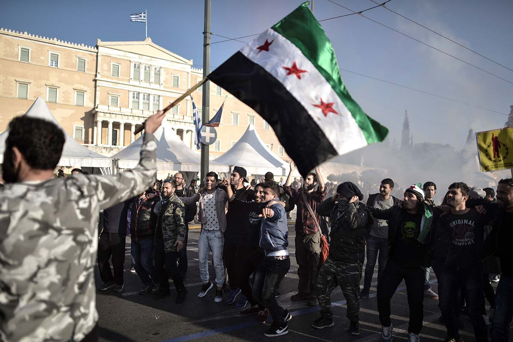

The September 11, 2001, attacks demonstrated not only al Qaeda’s ability to execute spectacular, long-range attacks from their base in Afghanistan, but also highlighted the group’s ability to operationalize their rhetoric in pursuit of the “far enemy.” The successful strikes inside the United States lent the organization unprecedented credibility in the eyes of the jihadi community.
Bin Laden, in a framework developed by his late mentor Abdullah Azzam, saw his organization as a vanguard party, leading Muslims to an eventual restoration of the caliphate under the banner of the Prophet Muhammad [pbuh]. Protected by the Afghan Taliban regime, Osama bin Laden internationalized al Qaeda’s agenda. In contrast to Azzam who focused on national conflicts, bin Laden believed that al Qaeda had a duty to protect the broader, worldwide ummah (Islamic community) from aggression by the West—and from America in particular.1 By provoking the American far enemy, bin Laden planned to ensnare the United States in a war against a Muslim regime that would then galvanize the Muslim world to rise up against the West. Giving credence to bin Laden’s idea was the particular standing of Mullah Omar within Afghanistan. In April 1996, the Taliban in Afghanistan declared Mullah Omar emir al mu’minin (leader of the faithful), and Afghanistan a caliphate.2
Key Judgements
The United States began a campaign against al Qaeda and its Taliban regime hosts on October 7, 2001. By December 2001, the United States, its coalition partners, and local allies routed the Taliban and scattered al Qaeda members not immediately killed or captured during the fighting. However, persistent safe haven in rural Afghanistan and Pakistan’s Federally Administered Tribal Areas (FATA) allowed the Taliban and al Qaeda to regroup after the initial International Security Assistance Force (ISAF) campaign.
Like in Bosnia and Chechnya, fighters from preceding conflicts laid the groundwork to attract and employ foreign fighters upon the incursion of a “foreign invader.” As many as 10,000–20,000 foreign fighters were already present in Afghanistan having traveled there between 1996–2001, mainly seeking short-term training from one of the many foreign-run camps in the geographically and politically isolated country.3
Crucial to the Taliban’s determination to not surrender Osama bin Laden to the United States was the continued presence of Afghan Arabs and a close relationship between bin Laden and the Pakistani ISI. Many Afghan Arabs returned to Afghanistan after attempts to migrate to other jihads such as Chechnya and Somalia. Foreign fighters in Afghanistan differed from locals in their ideological zeal and their reluctance to accept ceasefires due to the risk of deportation back to their home states.4
Foreign fighters in Afghanistan after 2001, in contrast to those in the anti-Soviet jihad, had a range of combat experience. Fighters from the Middle East, North Africa, China (Xinjiang Province), and the former Soviet Union all participated in the conflict with a majority present in Afghanistan before September 11, 2001.5 Unlike Afghanistan in the 1980s, and Bosnia and Chechnya in the 1990s, only a minority of fighters arrived after the start of the conflict and those who did come had a broad range of motivations and socioeconomic backgrounds. Despite the dissimilarities, the United States, like the Soviet Union before, found itself fighting a multinational group of ideologically motivated combatants.
Despite the differences in what brought the fighters to the conflict, trends like those in the Soviet war in Afghanistan and the conflicts in Bosnia and Chechnya, emerged. Fighters with prior experience, networks with other jihadi-salafis, and access to funds pulled a local conflict onto the global stage. Osama bin Laden’s videos, broadcast around the world, calling on all Muslims to resist the far enemy represented an evolution of Khattab’s concept of jihad through the media. The focus on a far enemy and the American response also elevated the fighters. Rather than remaining a minor far-off conflict, the war in Afghanistan came home on television screens each day. The whole of government response by the United States and the formation of a large coalition moved the conflict, and the fighters who were central to it, to the main stage of world affairs.
Rather than a minor far-off conflict, the war in Afghanistan came home on television screens each day.
U.S. policy also played a role in attracting more foreign fighters to Afghanistan. By nesting the Afghanistan campaign into a wider Global War on Terror (GWOT), the United States reinforced Taliban and al Qaeda claims that the United States was fighting a war against Islam.6 By aggregating seemingly disparate militant movements, the term GWOT likely provided al Qaeda with the notoriety and brand recognition to attract affiliate movements across the globe, most notably in Iraq.7
Key Judgements
In 2003, the United States invaded Iraq and deposed Saddam Hussein. Like in Afghanistan, the United States failed to establish new governance structures after deposing of the regime. Illegitimate or absentee government and chaos undermined the initial military victories. The demobilization of mid-grade military officers under a de-Baathification policy fostered further disorder—pushing many, well-trained military professionals into the ranks of al Qaeda in Iraq (AQI).9
Almost immediately after U.S. and coalition forces invaded Iraq, foreign fighters appeared in country, reaching peak levels around 2007.10 As many as 4,000–5,000 foreign fighters joined the conflict throughout the Iraq War, amounting to as much as 5 percent of the total Iraqi insurgency.11 Of the almost 600 foreign fighter personnel records seized at Sinjar, Iraq, and analyzed by West Point’s Counterterrorism Center, from August 2006–August 2007, 41 percent of foreign fighters came from Saudi Arabia, while 18.8 percent came from Libya.12 Small percentages of fighters from Syria, Yemen, Algeria, Morocco, and Jordan were also identified.13
Information on routes taken by foreign volunteers is limited but for those cases where information is available, nearly half of the fighters coming from Saudi Arabia traveled to Syria before entering Iraq. Travel from Jordan to Syria appears to have been the second most popular route.14 Known paths followed by North Africans moving to the conflict reveal that most fighters from the region transited Egypt before moving on to Syria to enter Iraq.
To bolster the number of fighters, President Assad also released militants from Syrian jails in 2004 and 2005, and ensured easy access for them and other militants heading to Iraq for much of the conflict. Hassan and Michael Weiss describe Assad’s attitude toward the jihadists as “useful agents for mayhem, for terror-in-reserve, for disrupting Bush’s nation-building experiment next door.”15
Unlike many local fighters who fought for tribal, local, or national aims, foreign fighters brought global ideologies to the conflict.
Although exact data does not exist, the average age of most fighters was 24–25 years old, with many born after 1980. Though numerous experienced fighters may have arrived in 2003, the average fighter’s age suggests many had limited or no combat experience prior to Iraq.16 For the small portion of fighters whose background information is known, it appears that the bulk of them were students. Others held jobs ranging from advanced professional roles (doctors, engineers, lawyers) to unskilled, blue-collar labor (guards, drivers).17 Unlike many local fighters who fought for tribal, local, or national aims, foreign fighters brought global ideologies to the conflict.
Crucial doctrinal differences emerged among the insurgent groups. The Jordanian leader of AQI, Abu Musab al Zarqawi, in stark contrast to both Abdullah Azzam and Osama bin Laden, focused on fomenting sectarian strife.18 Where Azzam concentrated on the removal of what he saw as un-Islamic regimes and bin Laden fixated on the “far enemy,” Zarqawi, a Jordanian street-thug-turned-jihadi, focused on targeting and provoking the Iraqi Shia community. Zarqawi and AQI subscribed to an apocalyptic worldview wherein the end of days was approaching and an Islamic caliphate would battle both non-Muslims and Shiites at Dabiq.
In Iraq, Zarqawi targeted Shiites with the intention of provoking a disproportional response and sparking a sectarian civil war that would signal the end of days. The apocalyptic philosophy of AQI increased tensions between the group and al Qaeda core, bringing ideological differences into sharp relief. Zawahiri counseled his Iraqi affiliate to refrain from targeting Shia groups, against an overly harsh implementation of sharia law, and to hold off on declaring a state.
AQI refused, and launched a major campaign to target Iraqi Shia.19 In February 2006, AQI bombed the al Askari20 shrine in Samarra, Iraq, triggering sectarian civil war. The same year, despite Zarqawi’s death, AQI proclaimed statehood.21
A concerted counterinsurgency effort in Iraq empowered Sunni tribes in Anbar Province in what is now known as the Anbar Awakening. The harsh implementation of sharia and excessive brutality that Zawahiri had warned Zarqawi to avoid alienated the Sunni tribes in Anbar. A surge of U.S. military personnel and an increasingly inclusive government enabled the Sunni tribes to reject AQI. This successful counterinsurgency campaign reduced AQI’s ability to find refuge in the Iraqi population in the west. The group nonetheless remained the dominant Sunni militant group in the theater.22
Key Judgements
Mohamed Bouazizi’s self-immolation in Sidi Bouzid, Tunisia, in December 2010 set off protests and demands for regime change throughout the Middle East. The Syrian iteration of the Arab Spring began in March 2011 when security forces opened fire on a crowd of protesters in Deraa, an outpost on the Iraq-Jordan border. Empowered by uprisings in other Arab states, Syrians demanded Assad’s departure but the regime’s harsh crackdown initiated a full-fledged civil war by 2012.
Concentrating on holding ground in traditionally Alawi areas in the west, the Assad regime fomented instability in eastern Syria by freeing fighters it had imprisoned during their attempts to leave Iraq. After their release from Sednaya Prison, the fighters activated global networks and campaigned to free their imprisoned compatriots in the region.
Owing to the newly released cadre, AQI launched a year-long “Breaking the Walls” campaign in July 2012, resulting in eight major prison breaks and the release of more than 500 prisoners detained during the Iraq war. Those released quickly formed the core of al Qaeda in Iraq.23 The presence of terrorists and extremists provided credence to Assad’s claims of fighting Islamists. Publicly grouping all protesters as terrorists, Assad initiated a harsh, widespread crackdown.
Although many fighters mobilized individually, existing regional networks facilitated the migration of other aspiring combatants to theater.
The gross violations of human rights committed by the Assad regime, the predominantly Shiite security forces in Iraq, and Shia militias in Iraq and Syria proved an effective recruitment issue for foreign fighters. Many recruits, as in the early days of the Soviet war in Afghanistan, were drawn by humanitarian impulses to protect their Sunni brothers and sisters. For these early volunteers, media reporting of the Syrian civil war triggered emotional responses and a sense of obligation to defend Syrian Muslims. Foreign fighters and would-be humanitarian workers began to mobilize as early as 2011 to help protect Syrians from the regime.
Although many fighters mobilized individually, existing regional networks facilitated the migration of other aspiring combatants to theater. Many transnational groups formed, or brought existing, alliances with local organizations. Jaish al Muhajireen wal Ansar (Army of Emigrants and Supporters), a group formed in the summer of 2012, united significant numbers of North Caucasian fighters in Syria. Led by Omar al Shishani, the Jaish al Muhajireen had a large membership from the groups active in Russia, including Imarat Kavkaz.24 Similar groups such as Imam Bukhari Jamaat, Sabri’s Jamaat, and Katibat al Tawhid wal Jihad united Uzbeks25 from affiliated groups such as the Islamic Jihad Union and the Islamic Movement of Uzbekistan.26
By 2013, many Arab governments and prominent Sunni clerics encouraged citizens to defend Syrian Sunnis. Among others, the influential Sunni cleric Yusuf al Qaradawi, speaking at a 2013 public rally in Doha, stated that Muslims had a duty to “support their brothers in Syria.”27 The support foreign fighters received throughout the Sunni Muslim world, coupled with existing sectarian strife and the actions of AQI continued the evolution of the Syrian civil war into a conflict with greater sectarian themes.28
The International Centre for the Study of Radicalisation and Political Violence (ICSR) estimates that over 8,500 foreign fighters traveled to Syria between late 2011 and December of 2013.29 Europeans and Arabs were identified as making up the largest portion of foreign volunteers traveling to the country (approximately 80 percent), though Southeast Asian, North American, and African (non-Arab) volunteers were also identified as having traveled to the Syrian battlefields.30 By December 2013, 74 countries were represented throughout the various opposition groups.31 The increased chaos allowed AQI, now led by Abu Bakr al Baghdadi, to spread into Syria as Jabhat al Nusra (Nusra Front) under the command of Abu Mohammed al Jolani.
Key Judgements
Jabhat al Nusra was officially announced in January 2012, and by 2013 was one of the most powerful groups fighting in Syria. No official connection between al Nusra and al Qaeda or AQI was publicized due to internal concerns that nationalistic Syrian fighters who viewed their conflict as a civil war would not support a supranational, global jihadi organization like al Qaeda.
Ideological differences also remained between Baghdadi’s AQI and al Qaeda Core (AQC) under Zawahiri. When, in April 2013, Baghdadi moved to consolidate power by announcing the Islamic State of Iraq and al Sham (also known as ISIS, the Islamic State, or ISIL)32 and that Jabhat al Nusra would be incorporated more directly into the Islamic State structure, Zawahiri countermanded him and ruled that al Nusra would remain independent. Critically, a key element of Baghdadi’s subsequent rejection of Zawahiri’s ruling was that the move to separate the two al Qaeda affiliates would prove “ruinous for the mujaheds with us, especially the muhajirs,”33 who had joined the Islamic State group.34
After a peak of nearly 40,000 fighters by 2015, the flow of fighters to the Islamic State began slowing by February 2016. As the Islamic State lost territory, it could no longer portray itself as an invincible, rising power.
Zawahiri effectively excommunicated the Islamic State, declaring in February 2014 that it “is not a branch of the al Qaeda group ... does not have an organizational relationship with it and [al-Qaeda] is not the group responsible for their actions,” severing any remaining relationship between al Qaeda core and its erstwhile affiliate.35 The split had wide-ranging implications across the global jihadist movement.
The fitna, or schism, between Jabhat al Nusra and the Islamic State extended to various allied groups of foreign fighters. JMA, Omar Shishani’s organization, split into two factions when Shishani pledged bayat (allegiance) to Abu Bakr al Baghdadi. A significant portion of Shishani’s force was previously part of Imarat Kavkaz, a group tied to al Qaeda and they refused to support the Islamic State.
Despite the schism, the Islamic State earned a series of military victories enabling it to capture Fallujah and Mosul and shifting the group from an insurgent organization to a proto-state in a “war of movement.”36 The militant organization began administering territory, providing salaries, making marriage arrangements, and enforcing sharia law. The proto-state also began levying taxes and collecting extortion fees and oil revenues in their newly captured territory, providing them with significant revenue.
Several months later, in June 2014, Abu Bakr al Baghdadi declared a caliphate and himself as the caliph and emir al mu'minin.37 The declaration of the caliphate furthered the fitna with al Qaeda and was an important boost for propaganda and recruitment. The Islamic State produced videos and magazines depicting daily life in the caliphate and calling on Sunnis to travel (perform hijra) to join the state. Whereas previous conflicts focused on defeating those who invaded Islamic countries, ISIS made governance and creating a caliphate a priority, capitalizing on conditions of state failure and power vacuums created by the civil war in Syria and the Arab Spring more broadly.
The Islamic State’s proto-statehood was both its source of strength and its most significant vulnerability. The territorial gains empowering the Islamic State led directly to a renewed U.S. intervention in the region, with a campaign of air strikes against the group in August 2014.38 Instead of the expensive, troop-intensive counterinsurgency campaign that was previously needed to roll back AQI’s gains, the Islamic State’s governance of territory and escalation to a “war of movement” allowed for the success of conventional tactics. An air campaign focused on decapitation of leadership, large troop movements, and the targeting of supply lines and financial reserves.
After a peak of nearly 40,000 fighters by 2015, the flow of fighters to the Islamic State began slowing by February 2016. As the Islamic State lost territory, it could no longer portray itself as an invincible, rising power. The loss of territory also reduced revenue flows to the group and undercut its legitimacy rooted in its proto-statehood.39 Along with deteriorating legitimacy, reduced revenue forced the group to cut salaries for foreign fighters in half.40
The U.S. special envoy for the Global Coalition to Counter the Islamic State, Brett McGurk, stated that by February 2016, the number of foreign fighters with the Islamic State dropped from 35,000 to 25,000 total fighters. Further complicating Islamic State recruitment was the growing difficulty in traveling to the battle space. At its peak, the flow of foreign fighters across Turkish-Syrian border was as high as 2,000 people per month; by September 2016 the flow of fighters had dropped down to 50 per month.41 The French government confirmed the decline in a report citing a sharp decrease in citizens traveling to Iraq and Syria in the first half of 2016.
As the proto-state continued to lose territory and new recruits, Islamic State leadership urged would-be fighters to remain in their home countries and “make it a month of calamity everywhere for the non-believers,” rather than traveling to join the caliphate.42 The sharp change in rhetoric indicated a shift back from a “war of movement” and a focus on building the caliphate to a more traditional terror-group structure and guerilla warfare.